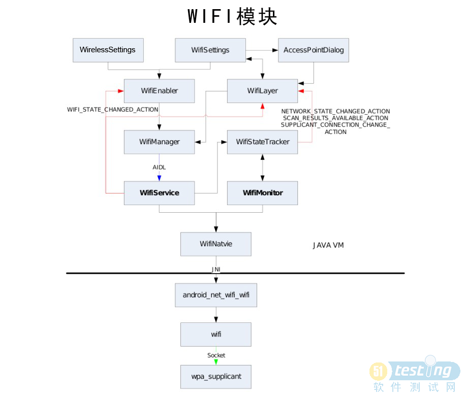

Wifi系统(ICS 4.0)
概述
参考Wifi的框架结构图，在Framework层将Wifi从横向分为4部分：
1.应用层控制：包含WifiSettings、WifiEnabler、WifiLayer等。该层主要完成Wifi功能的启停、热点的扫描和连接等功能的用户层接口。
2.Framework-Java层服务：WifiManager、WifiService、WifiStateMachine、WifiMonitor等。该层主要为应用层提供相应功能的接口。
3.Framework-C++层控制端：android_net_wifi_wifi、wifi等。该层主要为Java层提供操作接口，并作为客户端向系统守护进程发送命令。
4.Framework-守护进程：wpa_supplicant。该层主要和驱动层通讯，从而实现Wifi的功能。
从纵向上分，大概可分为2部分：
1.开关控制：WifiManager、WifiService。
2.状态控制：WifiStateTracker、WifiMonitor。
结构图

应用层控制
Java层服务
Java层的服务通常是我们所说的Service。就Wifi功能模块而言，它的服务端由Java代码实现，
主要分为高阶的API接口类WifiManager和低阶的API接口类WifiService。而核心功能主要包含以下模块：
1. WifiStateMachine
2. WifiMonitor
3. WifiNative
WifiManager（Java层高阶API）
WifiService（Java层核心服务类）
JNI接口和硬件抽象层
-
JNI接口和硬件抽象层是C/C++代码实现的底层调用接口，这两部分主要是为Java层的WifiNative类提供方法实现。
-
JNI接口的实现由
android_net_wifi_Wifi.cpp实现，它和其他JNI方法一起被编译成libandroid_runtime.so。
-
硬件抽象层的实现主要是
wifi.c，它会被编译成libnetutils.so。
-
libandroid_runtime.so的编译需要包含libnetutils.so。
参考代码路径
frameworks/base/core/jni/android_net_wifi_Wifi.cpp
hardware/libhardware_legacy/wifi/Wifi.c
JNI接口
-
JNI接口相对比较简单，它是对libnetutils.so提供的方法的包装，再提供给Java层的WifiNative类使用。
-
以下列出了部分JNI方法：
static JNINativeMethod gWifiMethods[] = {
{ "loadDriver", "()Z", (void *)android_net_wifi_loadDriver },
{ "isDriverLoaded", "()Z", (void *)android_net_wifi_isDriverLoaded},
{ "unloadDriver", "()Z", (void *)android_net_wifi_unloadDriver },
{ "startSupplicant", "()Z", (void *)android_net_wifi_startSupplicant },
{ "startP2pSupplicant", "()Z", (void *)android_net_wifi_startP2pSupplicant },
{ "stopSupplicant", "()Z", (void*) android_net_wifi_stopSupplicant },
{ "killSupplicant", "()Z", (void *)android_net_wifi_killSupplicant },
{ "connectToSupplicant", "()Z", (void *)android_net_wifi_connectToSupplicant },
{ "closeSupplicantConnection", "()V", (void *)android_net_wifi_closeSupplicantConnection },
// ......
}
Wifi硬件抽象层
{kind=link}